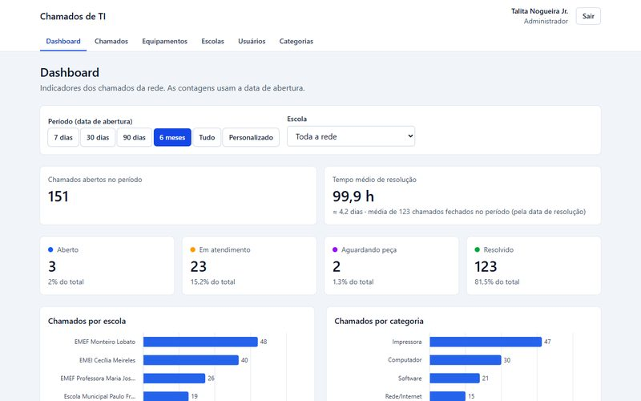

03 · Projetos
Menos projetos de vitrine. Mais projeto que existe.
Mantenho três projetos publicados, com código aberto e documentação: dois sistemas full stack com testes automatizados e o site institucional de uma empresa de impermeabilização. Prefiro destacar trabalho verificável em vez de preencher o portfólio com exercícios antigos.
Projeto em destaque
Chamados de TI
Help desk para redes de ensino · Full Stack · TypeScript
Sistema em que as escolas abrem chamados de TI, a equipe técnica atende com histórico completo e a gestão acompanha indicadores num dashboard. Nasceu da minha experiência no suporte de TI de uma rede municipal de ensino.
Três perfis de acesso com isolamento de dados por escola, "assumir chamado" à prova de concorrência, histórico gravado em transação e 117 testes de integração com CI no GitHub Actions.

Front-end · Site institucional
Construtora MI
Site de empresa de impermeabilização · React · TypeScript
Site institucional da Construtora MI & Serviços EIRELI, com uma página para cada um dos oito serviços, portfólio de obras, FAQ e formulário de orçamento que abre o WhatsApp da empresa com a mensagem pronta.
Todas as 20 rotas são pré-renderizadas em HTML com metadados próprios, sitemap e dados estruturados. Animações com GSAP que respeitam quem prefere menos movimento e componentes acessíveis por teclado.
Full stack · PWA
Caderneta 2
Gestão Financeira Pessoal · Full Stack · PWA offline-first
Aplicação de finanças pessoais que funciona sem internet e sincroniza os dados entre celular e computador. Frontend em React como PWA com IndexedDB, API em Node.js/Express e banco PostgreSQL, com autenticação e testes automatizados.
Full stack · offline-first · sincronizado
O que os projetos cobrem
Controle de acesso e segurança
Perfis com permissões validadas na API, isolamento de dados entre escolas e entre usuários, senhas com bcrypt, JWT em cookie httpOnly e sessões por token com hash.
Dados consistentes
Transações e atualização condicional contra concorrência no Chamados; sincronização offline com resolução de conflitos e IDs determinísticos no Caderneta.
Back-end e banco
APIs REST em Node.js/Express com PostgreSQL, validação por schema (Zod), migrações versionadas e consultas SQL para indicadores.
Qualidade e entrega
153 testes automatizados somando os dois sistemas full stack, integração com PostgreSQL real, CI no GitHub Actions, Docker Compose e deploy na Vercel e no Render.
SEO e desempenho
Pré-renderização estática com title, description, canonical e Open Graph por página, sitemap gerado no build, imagens WebP responsivas e carregamento sob demanda.
Interfaces acessíveis
Componentes navegáveis por teclado e leitor de tela, animações que respeitam prefers-reduced-motion e gráficos com paleta para daltonismo e opção de tabela.